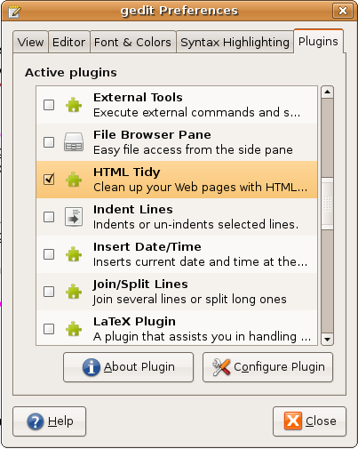
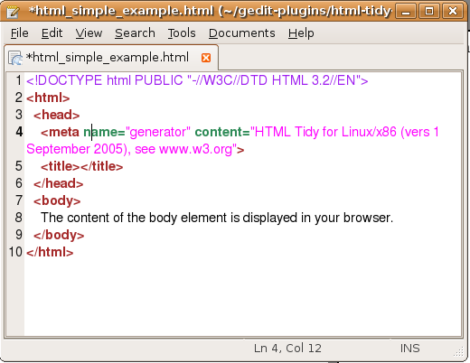
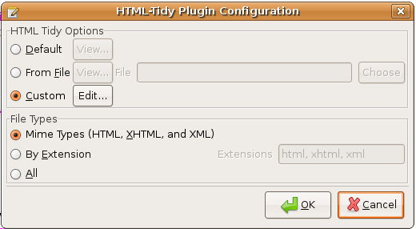

Purpose
When editing HTML it's easy to make mistakes. Wouldn't it be nice if there was a simple way to fix these mistakes automatically and tidy up sloppy editing into nicely layed out markup? Dave Raggett's HTML Tidy is a free utility for doing just that.
This is an HTML Tidy plugin for gedit, the default text editor for the Gnome Desktop. Once activated, this plugin allows:
- Fixing an HTML (or XHTML, or XML) document being written (from within gedit)
- Listing the errors and warnings of an HTML (or XHTML, or XML) document (without fixing it)
- Configuring HTML Tidy
Download, Install, and Activate
First, please make sure that HTML Tidy is installed on your system (e.g., via sudo apt-get install tidy). Following that, you can download, install, and activate the plugin using the following steps:
- Download html-tidy-gedit-plugin.tar.gz, and extract the contents to gedit's plugin directory (typically, ~/.gnome2/gedit/plugins/).
- Restart gedit.
- Select . Check the plugin as in the next screenshot. 
Use
The following screenshot shows a very basic HTML example. We'll see Checking for Problems and Correcting Problems.

Checking for Problems
To check for problems, select . The bottom pane (which can be shown through ) will show the problem report. Clicking on a row in the bottom pane will place the insert cursor at the location of the corresponding problem. The following screenshot shows a report for two problems: a missing <!Doctype> declaration, and a missing title element.

Correcting Problems
If you are reasonably pleased with your document, you might trust Tidy to correct it by selecting . The following screenshot shows the result.
Note that Tidy inserted some stuff, like the empty <title></title> pair. This empty title might not be what your page needs, but no HTML validity check will indicate further problems with the title element. You might consider, therefore, first Checking for Problems.
Configure
Accessing the Configuration Dialog
You can access the configuration dialog in one of two (equivalent) ways:
- Select , highlight this plugin, and click Configure Plugin.
- Selecte
The following screenshot shows the configuration dialog:
Now we have the configuration dialog, which has just two frames. We'll cover them in Setting HTML Tidy's Options and Setting the File Types.
Setting HTML Tidy's Options
HTML Tidy comes with quite a few configuration options. You can set them using the radio options in the configuration dialog's frame:
- Default: This just uses whatever HTML Tidy decides is the defaults. (Note: If you write non-English HTML pages - you don't want this.)
- From File: This parses and uses an HTML Tidy configuration file.
- Custom: This allows you to manually set each option, using the dialog in the next screenshot:

Setting the File Types
Suppose you're editing a Python source, your LaTeX thesis, or just a (non-HTML) suicide note. You probably don't want to run HTML Tidy on these, and it would be nice if the relevant actions ( and ) were just disabled when you do this. You can set this using the radio options in the configuration dialog's frame:
- Mime Types: The actions will be available only if gedit decides the document's Mime-type is HTML, XHTML, or XML
- By Extension: The actions will be available only if the active document's file type extension is one of a list.
- all: The actions are always available.